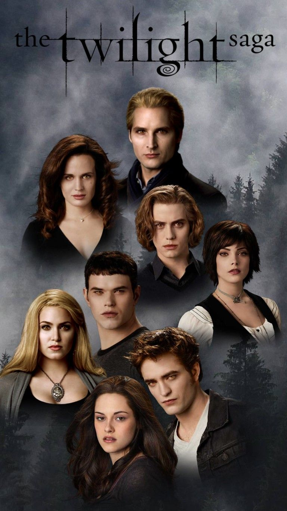
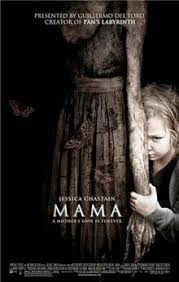

| movie image |
movie title |
movie description |
 |
you people |
You People is a 2023 American romantic comedy film directed by Kenya Barris, which he co-wrote with Jonah Hill. The film features an ensemble cast that includes Hill, Lauren London, David Duchovny, Nia Long, Julia Louis-Dreyfus, and Eddie Murphy. Its plot focuses on an interracial and interreligious couple, namely a white Jewish man and a Black Muslim woman, and how their families reckon with modern love amid culture clashes, societal expectations and generational differences. Set in the Los Angeles area, two Millennials meet by chance and go into uncharted waters in their dating lives. |
|  |
twilight |
Twilight is a 2008 American romantic fantasy film directed by Catherine Hardwicke from a screenplay by Melissa Rosenberg, based on the 2005 novel of the same name by Stephenie Meyer. It is the first instalment in The Twilight Saga film series. The film stars Kristen Stewart and Robert Pattinson as Bella Swan, a teenage girl, and Edward Cullen, a vampire, respectively, and focuses on the development of Bella and Edward's relationship and the subsequent efforts of Edward and his family to keep Bella safe from another coven of vampires. |
| |
ratatouille |
A rat named Remy dreams of becoming a great French chef despite his family's wishes and the obvious problem of being a rat in a decidedly rodent-phobic profession. When fate places Remy in the sewers of Paris, he finds himself ideally situated beneath a restaurant made famous by his culinary hero, Auguste Gusteau. Despite the apparent dangers of being an unlikely, and certainly unwanted, visitor in the kitchen of a fine French restaurant, Remy's passion for cooking soon sets into motion a hilarious and exciting rat race that turns the culinary world of Paris upside down.
|
 |
incidious |
Insidious is a 2010 supernatural horror film directed by James Wan, written by Leigh Whannell, and starring Patrick Wilson, Rose Byrne, and Barbara Hershey. It is the first installment in the Insidious franchise, and the third in terms of the series' in-story chronology. The story centers on a married couple whose boy inexplicably enters a comatose state and becomes a vessel for a variety of demonic entities in an astral plane. |
 |
Conjuring |
Before there was Amityville, there was Harrisville. The Conjuring tells the horrifying true story of Ed and Lorraine Warren, world renowned paranormal investigators, who were called to help a family terrorized by a dark presence in a secluded farmhouse. Forced to confront a powerful demonic entity, the Warrens find themselves caught in the most terrifying case of their lives. Oscar® nominee Vera Farmiga (The Departed) and Golden Globe nominee Patrick Wilson (Insidious) play the investigators while Golden Globe nominee Ron Livingston (Band of Brothers) and Emmy® nominee Lili Taylor (Six Feet Under) play the Perron family plagued by sinister spirits in this dark chiller from the writers of The Reaping and the creator of the Saw films. |
 |
Annabelle |
A couple begins to experience terrifying supernatural occurrences involving a vintage doll shortly after their home is invaded by satanic cultists.
John Form has found the perfect gift for his expectant wife, Mia - a beautiful, rare vintage doll in a pure white wedding dress. But Mia's delight with Annabelle doesn't last long. On one horrific night, their home is invaded by members of a satanic cult, who violently attack the couple. Spilled blood and terror are not all they leave behind. The cultists have conjured an entity so malevolent that nothing they did will compare to the sinister conduit to the damned that is now... Annabelle. |
|  |
Mama |
Mama is a 2013 supernatural horror film directed and co-written by Andy Muschietti in his directorial debut and based on his 2008 Argentine short film Mamá. The film stars Jessica Chastain, Nikolaj Coster-Waldau, Megan Charpentier, Isabelle Nélisse, Daniel Kash, and Javier Botet as the title character.
The film follows two young girls abandoned in a forest cabin, fostered by an unknown entity that they fondly call "Mama", which eventually follows them to their new suburban home led by two adults after their uncle retrieves them. |
| |
Drag me to hell |
Drag Me to Hell is a 2009 American supernatural horror film directed and co-written by Sam Raimi. It stars Alison Lohman, Justin Long, Lorna Raver, Dileep Rao, David Paymer, and Adriana Barraza. The plot, written with his older brother Ivan, focuses on a loan officer, who, because she has to prove to her boss that she can make the "hard decisions", chooses not to extend an elderly woman's mortgage. In retaliation, the woman places a curse on the loan officer that, after three days of escalating torment, will plunge her into the depths of Hell to burn for eternity. |